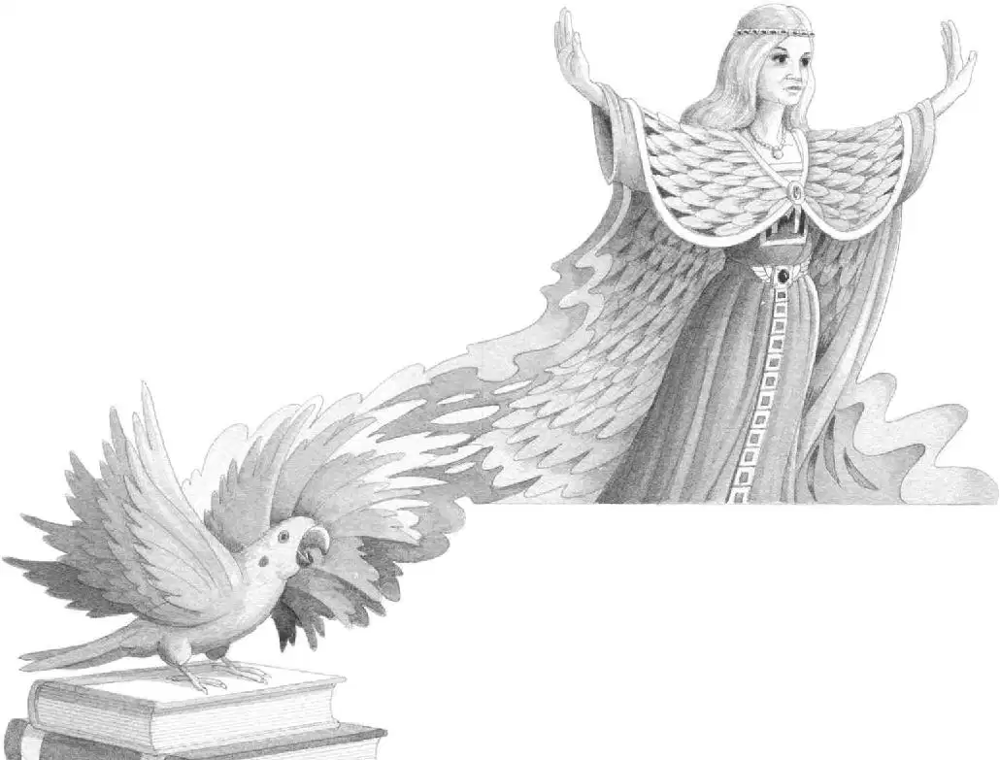

滴答，滴答。
杰克睁开眼睛。
雨点儿正从树叶上往下滴。
他们又回到了蛙溪。
雨小了一些，风柔了一些，空气也更清新了一些。
“哦，天哪！”杰克叹了口气说，“刚才真悬啊。”
他手里仍然握着那枚金勋章。
“波利不见了。”安妮难过地说，“我还以为它会跟我们一起回来呢。”
“从来没有哪个魔法生物跟我们一起回来过。”杰克说。
他取下背包，背包被雨水和海水浸得湿漉漉的。
杰克掏出海盗书，把它放在那摞书的最上面，下面依次是恐龙书、骑士和城堡书以及木乃伊书。
然后，杰克把金勋章放在那个带有字母M的书签旁边。
接着他跪了下来，用一根手指拂过地板上那个亮光闪闪的M。
“我们这次旅行没有找到带M的东西。”他说。
“也没有遇到姓M的人。”安妮说。
“嘎嘎！”
“波利！”安妮叫了一声。
鹦鹉忽地飞进树屋，落在那摞书上。
波利直直地看着杰克。
“你……你怎么会在这里？”杰克问。
波利慢慢抬起那一对鲜艳的绿色翅膀。
翅膀越展越大、越展越大，最后变成了一件巨大的绿色斗篷。
之后，色彩变幻，羽毛飞舞，亮光闪烁，令人眼花缭乱。
随着一阵拍打、伸展和吱吱的响声，一个新的形象出现了。
波利不再是一只鹦鹉，它变成了一位老妇人，一位美丽的老妇人。
她长着一头长长的白发和一双睿智的眼睛，穿着一件绿色的羽毛斗篷。
她坐在那摞书上，神情非常安详、宁静。
杰克和安妮都惊讶得说不出话来。
“你好，杰克。你好，安妮。”老妇人说，“我的名字叫仙女摩根。”
安妮先回过神来，轻声说：“你就是那个M。”
“是的，我就是M。”摩根说。
“那……你是从哪儿来的呢？”杰克好奇地问。

“你听说过亚瑟王吗？”摩根问。
杰克点点头。
“我是亚瑟王的妹妹。”摩根说。